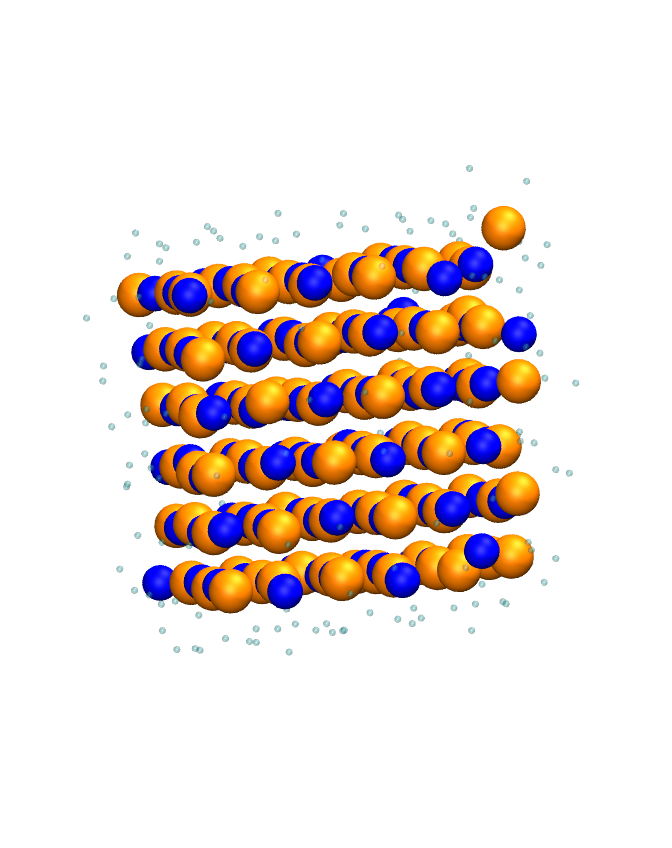
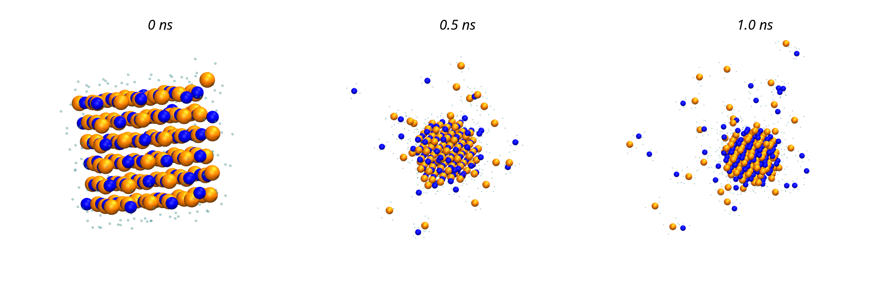
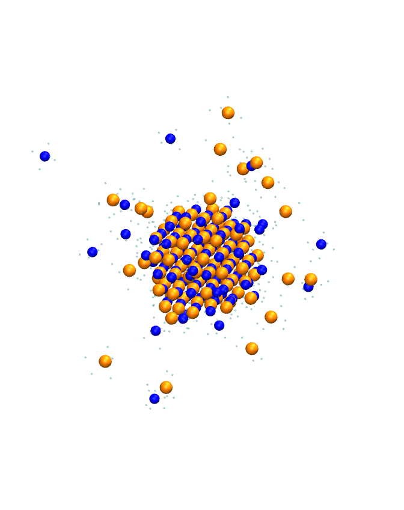
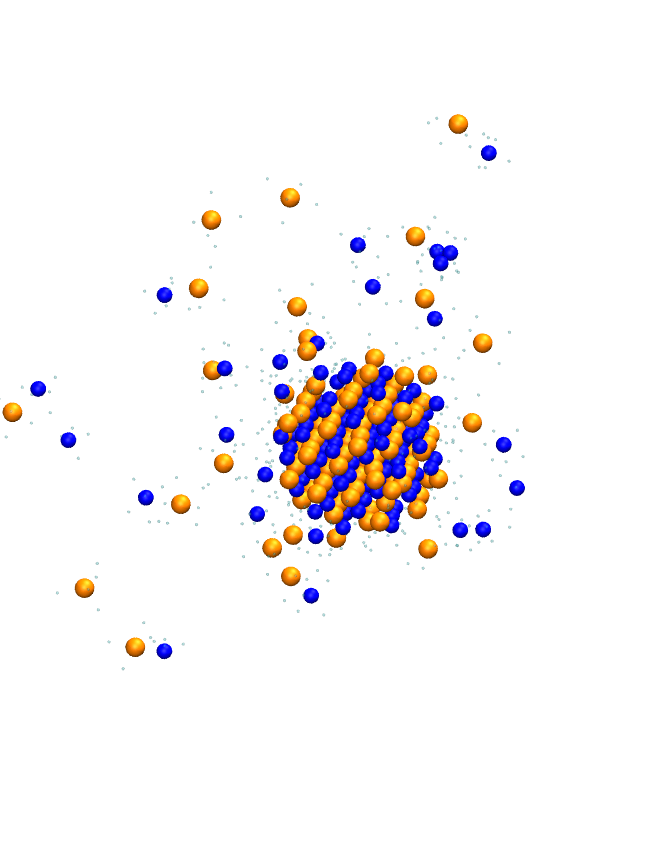
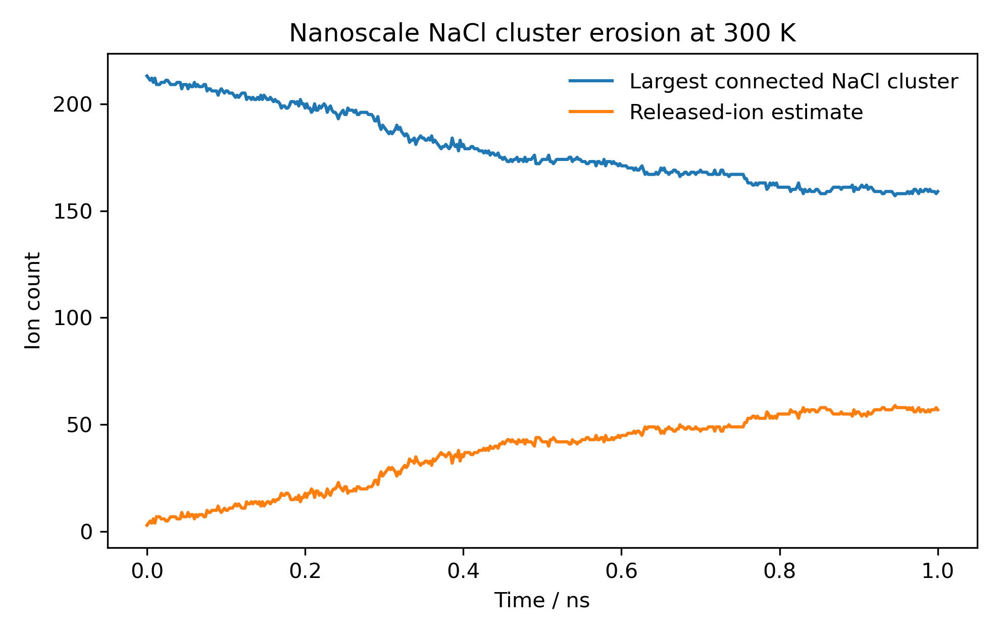

0 ns
The cluster starts in an ordered, crystal-like arrangement.
Project 002
I wanted to show a familiar chemical event at molecular scale: an ordered salt cluster beginning to erode as water surrounds individual ions.
The ordered salt cluster does not disappear at once. The surface becomes rougher as individual ions leave the connected lattice and become hydrated.


The cluster starts in an ordered, crystal-like arrangement.

The surface has already become less regular.

More ions sit outside the largest connected cluster.
In this 1 ns room-temperature simulation, the nanoscale salt cluster did not vanish instantly. It eroded from the surface. By the final frame, 57 ions were outside the largest connected cluster.

I placed a small NaCl cluster in TIP4P/2005 water and ran an unrestrained 300 K simulation. For the public page, I focus on the visual sequence: ions leave the connected cluster and become hydrated.
This is a nanoscale dissolution visualization, not a measurement of real dissolution rate or salt solubility. The useful idea is the molecular picture: ordered ions at the surface detach and water stabilizes them.